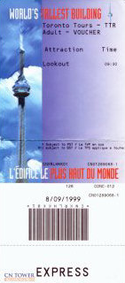
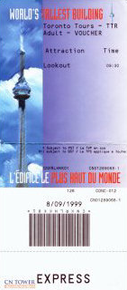
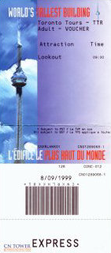

1.The CN Tower
 

Fig 2. CN Tower Ticket
Location: 290 Bremner Blvd, Toronto, ON M5V 3L9, Canada
Details
Click the photos for more information and pricing of tickets

Location: 290 Bremner Blvd, Toronto, ON M5V 3L9, Canada
Click the photos for more information and pricing of tickets


Location: 288 Bremner Blvd, Toronto, ON M5V 3L9, Canada
Click the photos for more information and pricing of tickets


Location: 100 Queens Park, Toronto, ON M5S 2C6, Canada
Click to know price!
Click the photos for more information


Location: 6650 Niagara Parkway. (River Rd) Niagara Falls, ON L2G 0L0, Canada
Click the photos for more information and pricing of tickets


Click the photos for more information


Location: 4010 Whistler Way, Whistler, BC, V8E 1J2, Canada
Click the photos for more information


Location: British Columbia, Canada
Click the photos for more information


Location: Ontario 60, Ontario K0J 2M0, Canada
Click to know price!
Click the photos for more information and pricing of tickets